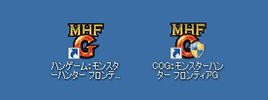
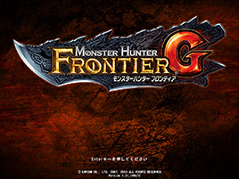

起動方法

（１）ランチャーを起動しログイン（先に起動する分）
通常の手順と同様にランチャーを起動し、ログインします。（ランチャーはカプコンオンラインゲームズのものです）
ハンゲームとカプコンオンラインゲームズの両方のポータルでご利用いただけます。また、それぞれ別のポータルであっても多重起動は可能です。

（２）ランチャーの起動（後から起動する分）
先に起動したゲームプログラムがタイトル画面まで表示されたら、もう一度ランチャーを起動します。
先に起動したゲームプログラムがタイトル画面まで進まない間は、新たなランチャーを起動できません。
（３）ログイン（後から起動する分）
2つ目のランチャーを起動してログインします。（ランチャーはカプコンオンラインゲームズのものです）
キーボードでIDなどを入力するためには、後から起動したゲーム画面がフォーカス（選択されて前面にある状態）されている必要があります。

（４）多重起動完了！
ゲームパッドは2台にまで対応します。
パソコンが最初に認識したデバイスから順にゲームプログラムに割り当てられ、それぞれのゲームパッドで操作することが可能になります。
ゲームパッドでの操作は、ウィンドウがフォーカスされていなくても操作可能です。マウス、キーボードはフォーカスされたウィンドウの操作に対応します。